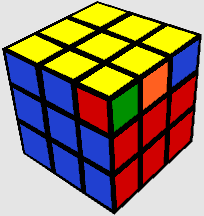

Étape 4 : Permutation de la dernière couche
L'étape PLL consiste à permuter les pièces de la dernière couche pour compléter le cube.
Instructions:
- Identifier le cas PLL : Regardez la dernière couche et identifiez la disposition des pièces.
- Appliquer l'algorithme : Utilisez l'algorithme correspondant pour permuter les pièces et résoudre le cube.
Ressources: Liste des 21 cas PLL et leurs algorithmes. Vidéos explicatives.
cette video va vous apprendre a faire vos pll en seulement 4 formule
https://www.youtube.com/watch?v=f_Yor-ydZjs 